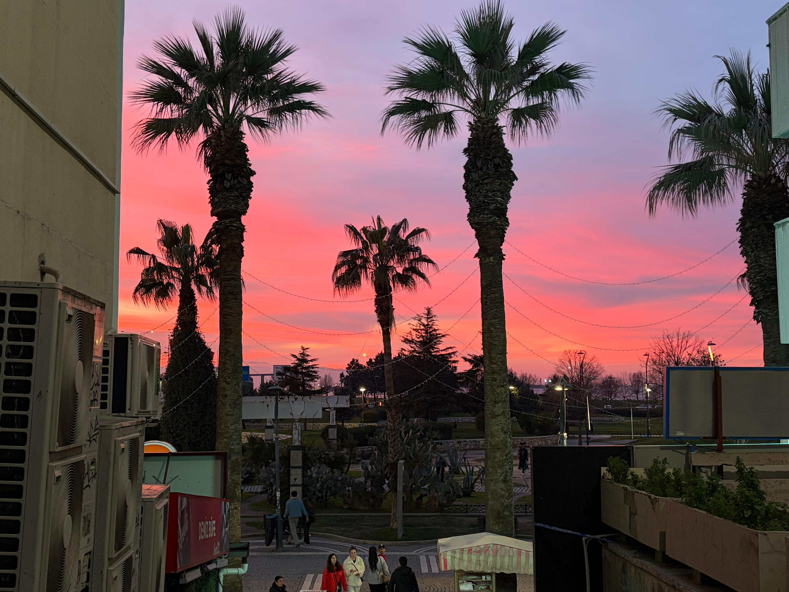
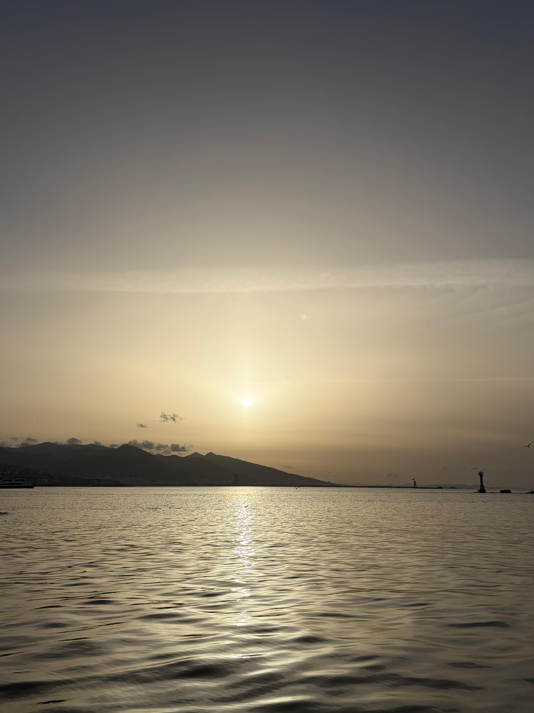

This photo perfectly captures that classic İzmir magic where the deep blue of the Aegean meets a crisp, clear sky. I love how the pine trees in the foreground frame the Gulf of Konak, making it feel like you're standing right there on the hillside catching the breeze. There is such a peaceful contrast between the white city shoreline and the sparkling water.

This sunset shot captures that perfect moment in İzmir when the sky turns a dreamy mix of pink and orange behind the palm trees. It has such a peaceful, warm energy that makes the whole city feel like it’s slowing down for the evening. The silhouettes look amazing against those colors, giving the photo a really classic coastal vibe. It is the kind of view that reminds you why the Mediterranean at dusk is so special

This photo perfectly captures the golden hour in İzmir, where the sun sits low over the mountains and casts a shimmering path across the calm Aegean waters. The soft, hazy light creates such a serene and warm atmosphere, making the whole coastline feel incredibly peaceful as the day winds down. It is a beautiful, minimalist shot that really highlights the natural beauty of the city's sea view.